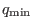
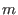
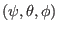
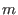
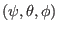
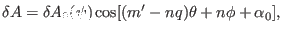
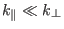

Figure 19 compares a small number of  contours and
contours and
 contours on a magnetic surface.
contours on a magnetic surface.
Figure 19:
Comparison between a series of contours
(left) and a series of contours (right) on a magnetic surface. Here
the values of are
with
, i.e., only  of the full torus. The
values of contours are
with
, i.e., only of the full range
of the full torus. The
values of contours are
with
, i.e., only of the full range  .
Every and contours start from the lower-field-side midplane
and go one full poloidal loop. Magnetic field from EAST discharge
#59954@3.03s.
.
Every and contours start from the lower-field-side midplane
and go one full poloidal loop. Magnetic field from EAST discharge
#59954@3.03s.
|
|
As is shown in the left panel of Fig. 19, with fixed, an
 curve reaches its starting point when changes from zero to
. However, as shown in the right panel of Fig. 19, with
fixed, an curve (i.e. a magnetic field line) does not reach
its starting point when changes from zero to . There is a
toroidal shift, , between the starting point and ending point.
Therefore there is generally no periodic condition along since
curve reaches its starting point when changes from zero to
. However, as shown in the right panel of Fig. 19, with
fixed, an curve (i.e. a magnetic field line) does not reach
its starting point when changes from zero to . There is a
toroidal shift, , between the starting point and ending point.
Therefore there is generally no periodic condition along since  is
not always an integer. A mixed periodic condition involves both and
is given in (290).
is
not always an integer. A mixed periodic condition involves both and
is given in (290).
In field-line-following coordinates
 , a toroidal
harmonic of a physical perturbation can be written as
, a toroidal
harmonic of a physical perturbation can be written as
where  is the toroidal mode number, , which may not be an integer, is
introduced to describle the variation along a field line. The periodic
condition given by Eq. (290) requires that
is the toroidal mode number, , which may not be an integer, is
introduced to describle the variation along a field line. The periodic
condition given by Eq. (290) requires that
To satisfy the above condition, we can choose
where is an arbitrary integer, i.e.,
We are interested in perturbation with a slow variation along the field line
direction (i.e., along
) and thus we
want the value of to be small. One of the possible small values given by
expression (295) is
where N
is a function that return the nearest integer of its
argument, and  is the maximal and minimal value of the
safety factor in the radial region in which we are interested. Note that
depends on the radial coordinate  through . Also note that
here is differnt from the poloidal mode number  in
 coordinate system. It is ready to show that the perturbation given by
Eq. (292) with and has large poloidal mode
number when expressed in
coordinates. [Proof:
Expression (292) can be written as
through . Also note that
here is differnt from the poloidal mode number  in
 coordinate system. It is ready to show that the perturbation given by
Eq. (292) with and has large poloidal mode
number when expressed in
coordinates. [Proof:
Expression (292) can be written as
If is the staight-field-line poloidal angle in
coordinate system, then
and the
above eqaution is written as

which indicates the poloidal mode number in
coordinates is given by
. For the case with and , is much larger than one.]
[In the past, I choose
. However, in this case is not a continuous function of and thus is not
physical.]
[In passing, let us introduce the binormal wavenumber, which is frequently
used in presenting turbulence simulation results. Consider the toroidal phase
in expression (292), i.e.,
Define the binormal direction
by
which a unit vector lying on a magnetic surface and perpendicular to
 . The binormal wavenumber is defined by
. The binormal wavenumber is defined by
which can be written as
Using
 , the above equation is written
, the above equation is written
which indicates the binormal wavenumber generally depends on the poloidal
angle. For large aspect-ratio tokamak, we have
,
. Then Eq. (301) is written
which indicates the binormal wavenumber are approximately indepenent of the
poloidal angle. For modes with field aligned structure (i.e.,
), we have
, where is the poloidal mode numer
along with hold fixed. In this case, the above equation is
written
, which is the usual poloidal wave number. Due
to this relation, the binormal wavenumber is often denoted by
in papers on tokamak turbulence. In some papers the binormal
wavenumber is denoted by .]
Since contours are magnetic field lines, they span out the 3D shape
of the magnetic surface when there are enough numbe of contours on a
magnetic surface, as is shown by the left-panel of Fig. 20.
Figure 20:
Comparison between a series of
contours(left) and a series of contours (left) on a magnetic
surface. The contours correspond to magnetic field lines. Here the
values of adjacent contours differ by
and each contour goes one full poloidal loop. Magnetic field
from EAST discharge #59954@3.03s.
|
|
yj
2018-03-09